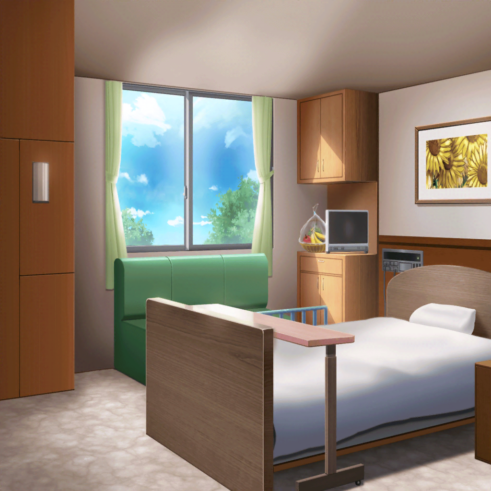

病室
モカ
つぐ～来たよ～
つぐみ
モカちゃん！ それに、蘭ちゃんも！
巴
蘭……
蘭
……巴
蘭・巴
……
ひまり
……な、なんか５人揃うの、久しぶりだね？
モカ
いやあ～、何年ぶりかなあ～。
ひーちゃんもトモちんも、こんなに大きくなっちゃって……
巴
２日しか空いてないだろ
つぐみ
あはは……２人共、来てくれてありがとう
モカ
いーえー。つぐ、元気になった～？
つぐみ
うん、もうだいぶよくなったよ。ありがとう
モカ
そっか。よかったねえ。
つぐのことが心配で、夜も眠れなかったんだよ～
つぐみ
ふふっ。そんな、大げさだよ
モカ
夜眠れないかわりに、授業中寝てたけどね～
ひまり
……モカって、なんでこうなのに成績いいんだろ？
モカ
ま、モカちゃんは天才だからね～
巴
チョーシのりすぎだ
つぐみ
学校……何日かお休みしちゃったから、
授業、ついていけるか心配だなあ……
モカ
だいじょーぶ！ あたしが特別にノート見せてあげるよ
巴
モカのノートは独特だからなあ……
こう、解読に時間がかかるというか……
モカ
そうかなあ～？
てか、学校にはいつから戻ってくるの？
つぐみ
この調子なら週明けには退院して、学校にも行けそうだよ！
ひまり
おお～！ よかったね！
モカ
うんうん。よかったよかった。
じゃあ、週が明けたらバンドの練習もできるね～。
……の前に、蘭とトモちんの仲直りが先かなあ～？
蘭
……
巴
……
つぐみ
あの……
巴
つぐ、その話はアタシからする。まず……蘭。
この間は悪かった。蘭のことが心配だったとはいえ……
言い過ぎた。その……ごめん
蘭
あ、あたしも……ご、めん……
モカ
これで仲直り～……でいいのかな？
蘭
……ん
ひまり
……巴
巴
……それで
巴
さっき、みんなで蘭のことを話してたんだ。
最近の蘭、ずっとつらそうだって
巴
もともとこのバンドは、
みんなで一緒にいられるようにってはじめたものだろ？
巴
……なのに、そのバンドに参加してる時の蘭は
すごく苦しそうに見えて
蘭
それは……！
巴
蘭はきっと今、家のことで大変なんだと思う。
それは、アタシから見てもわかる
巴
もし、バンドが蘭を、
家との板挟みで苦しめているのだとしたら……
アタシらも、すごくつらい
蘭
（いや……）
巴
アタシらは、蘭を苦しめてまでバンドをしたいと思わない。
だから……
蘭
（……それ以上、言わないで）
巴
しばらく……バンドを休止させないか
モカ
……！
蘭
……っ
ひまり
蘭が落ち着いたらまた、活動再開させようよ。
……ね？

蘭
……また、みんなで夕焼け、見たいな……
モカ
……蘭
蘭
……見られる、かな？
モカ
うん。見られるよ
蘭
…………っ
蘭
……やだ
巴
蘭？
蘭
いやだ！！！ あたしはバンド、やめたくない！